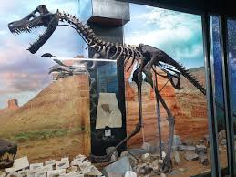

D'Bone Collection Museum

D’ Bone Collector Museum in Davao City is a unique natural history museum and education center featuring over 700 animal skeletons from around the world. Founded by American naturalist Darrell Dean Blatchley in 2012, the museum uses its vast collection to advocate for environmental conservation and wildlife protection.
Key Museum Highlights
The museum spans three floors of exhibits, often paired with poignant stories about how the animals died, frequently due to human impact like plastic pollution.
- Massive Marine Collection: Home to one of the largest collections of whale and dolphin skeletons in the Philippines, including a 41-foot sperm whale.
- Diverse Species: Exhibits include skeletons of a grizzly bear, python, crocodiles, rare insects, and even replicas of dinosaur bones.
- Educational Focus: Tours are led by knowledgeable guides (and sometimes the founder himself) who explain the biological and environmental significance of the specimens.
Visitor Information (as of March 2026)
- Location: 76-A San Pedro St, Talomo, Davao City (near Nograles Park).
- Hours: Monday to Saturday, 10:00 AM – 5:00 PM (Closed on Sundays).
- Admission Fees:
Regular: ₱250.00.
Discounted: 20% off for Senior Citizens, PWDs, and Students (17 and below) with valid ID.
- Facilities: The museum is family-friendly but can get warm inside as air conditioning is limited; visitors are advised to dress lightly.